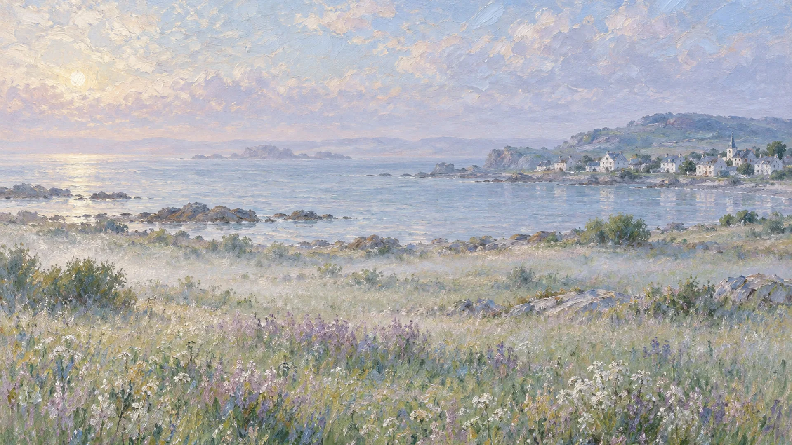
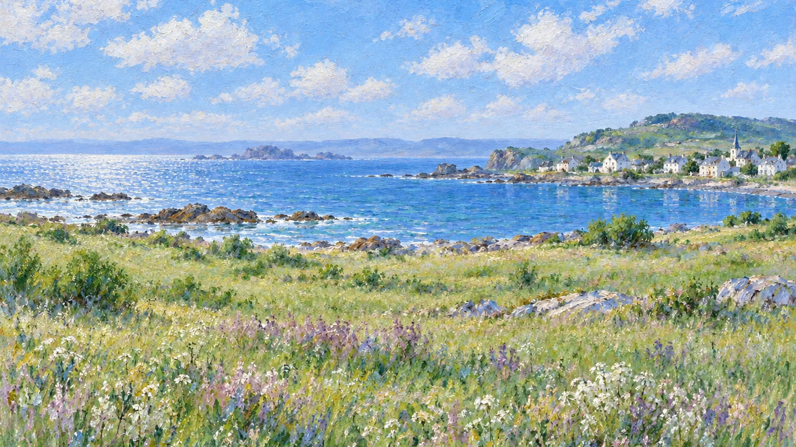
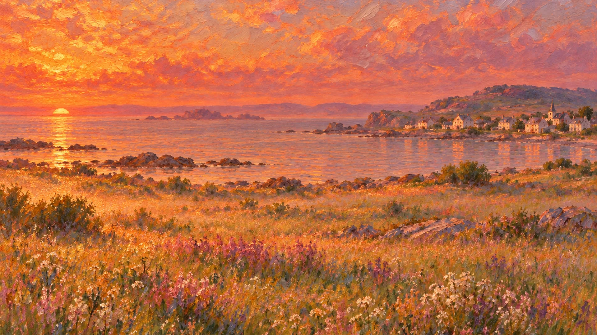
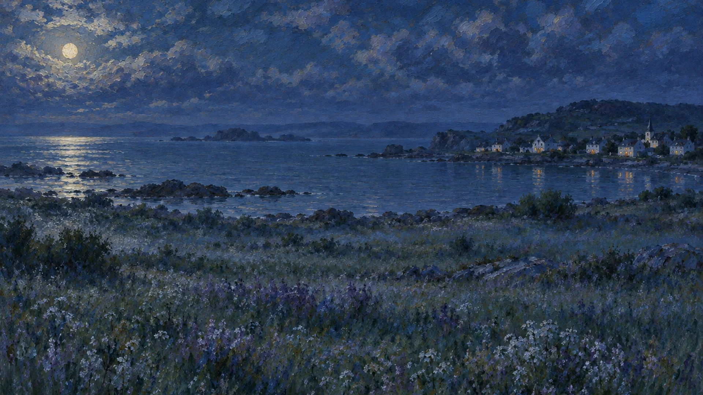

在鸥屿过一天
鸥屿海岸民宿 · 从清晨到夜晚的四个去处
在鸥屿过一天
06:30 · 清晨
草坡看雾
跟着管家走上草坡，看雾从海面上一点点散开。

在鸥屿过一天
12:00 · 正午
出海午餐
帆船绕过两座礁石岛，午饭是船上现烤的鱼。

在鸥屿过一天
18:10 · 黄昏
露台晚餐
太阳贴着海平线落下，晚餐摆在朝西的露台上。

在鸥屿过一天
21:00 · 夜晚
草地观星
关掉院子里的灯，躺在草地上看月亮走过海湾。
给你留一扇窗
鸥屿海岸民宿 · 示例内容，品牌和行程都是虚构的